Buy Eggs Online
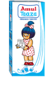
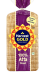
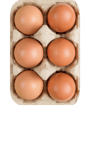
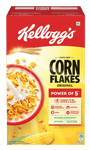
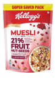
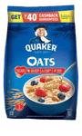
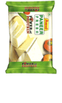
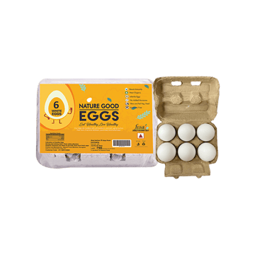
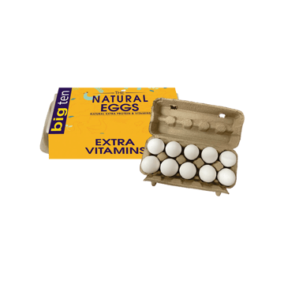
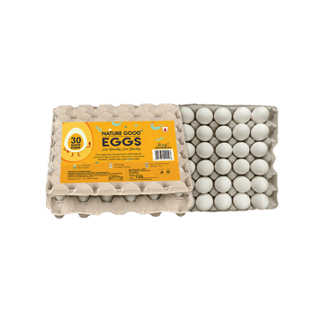
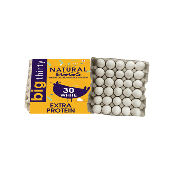
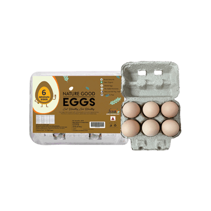
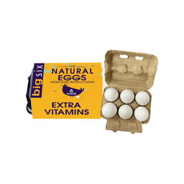
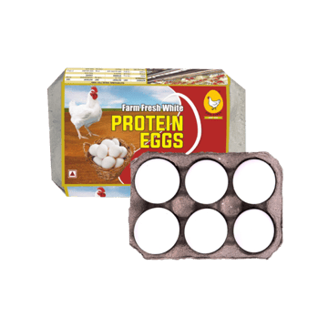
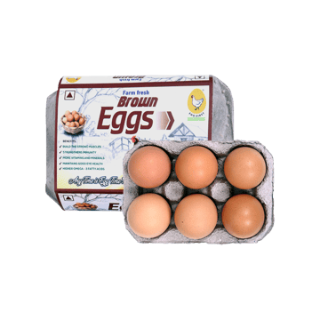
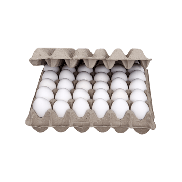
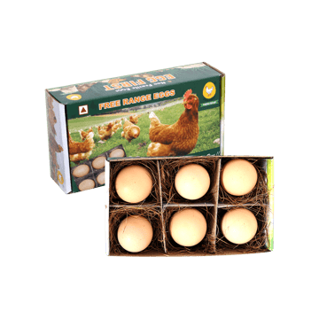
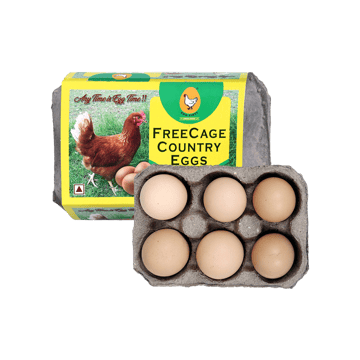
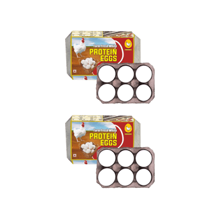
Eggs have long been a staple in diets worldwide, prized for their high-quality protein, rich nutritional profile, and versatility in cooking. Whether consumed at breakfast, lunch, or dinner, eggs provide an affordable and convenient source of essential nutrients. They are used in everything from simple boiled preparations to gourmet dishes, making them a must-have ingredient in every kitchen.
Nutritional Value of Eggs
Eggs are considered a nutritional powerhouse, offering a perfect balance of macronutrients and micronutrients. A single large egg (approximately 50g) provides:
Macronutrients
Calories – Around 70 kcal
Protein – 6-7g of high-quality protein, containing all nine essential amino acids
Fats – 5g, including healthy monounsaturated and polyunsaturated fats
Carbohydrates – Less than 1g, making eggs an excellent low-carb food
Micronutrients
Vitamin B12 – Essential for brain function and red blood cell production
Choline – Supports brain development, memory, and liver health
Vitamin D – Strengthens bones and boosts immunity
Iron & Selenium – Important for oxygen transport and antioxidant support
Lutein & Zeaxanthin – Promote eye health and reduce the risk of cataracts
Contrary to outdated beliefs, moderate egg consumption does not significantly impact cholesterol levels in most people. The good fats and nutrients in eggs can contribute to overall heart health.
Types of Eggs Available
With growing consumer awareness, eggs are now available in a variety of options, catering to different dietary needs:
Regular White Eggs
- The most commonly consumed variety
- Affordable and widely available
- Great for everyday cooking and baking
Brown Eggs
- Often perceived as healthier, though nutritionally similar to white eggs
- Typically come from specific hen breeds with brown feathers
- Slightly more expensive than white eggs
Free-Range Eggs
- Sourced from hens that are allowed to roam freely
- Often have higher Omega-3 content due to natural feeding practices
- Considered more ethical and sustainable
Organic Eggs
- Produced by hens raised on organic feed without antibiotics or synthetic additives
- Free from harmful pesticides and chemicals
- Generally have a richer taste
Omega-3 Enriched Eggs
- Contain higher levels of heart-healthy Omega-3 fatty acids
- Beneficial for brain function, heart health, and reducing inflammation
Vitamin D Fortified Eggs
- Specifically enriched with higher Vitamin D content
- Helps in bone health and immune system support
Speciality & Pasture-Raised Eggs
- These eggs come from hens that are pasture-fed or raised in cage-free environments
- They often have better nutritional profiles and a richer taste
Culinary Uses of Eggs
Eggs are one of the most versatile ingredients in cooking, used in a variety of ways across cuisines:
Breakfast Staples
- Scrambled eggs, omelettes, and sunny-side-up eggs are classic morning options
- Boiled eggs are a great on-the-go snack
Baking & Desserts
- Eggs add structure, moisture, and richness to cakes, cookies, and pastries
- Used in custards, puddings, and mousses
Binding & Thickening Agent
- Essential in making meatballs, burger patties, and breaded coatings
- Used in soups, sauces, and gravies to enhance texture
Egg-Based Dishes
- Frittatas and quiches – hearty meals packed with vegetables, cheese, and meats
- Deviled eggs and egg salads – popular appetizers and snacks
Global Cuisines
- Japanese cuisine – Tamago sushi and ramen egg
- French cuisine – Classic soufflés and hollandaise sauce
- Indian cuisine – Egg curry and masala omelettes
Health Benefits of Eggs
Rich Source of High-Quality Protein
- Helps in muscle growth, tissue repair, and overall body function
- Ideal for athletes, bodybuilders, and those looking to maintain muscle mass
Supports Brain & Nervous System Health
- Choline aids in memory, cognition, and neurological function
- Essential for pregnant women to support fetal brain development
Promotes Weight Management
- Eggs are high in protein and healthy fats, keeping you full for longer
- Helps in reducing overall calorie intake and controlling hunger cravings
Boosts Eye Health
- Lutein and zeaxanthin protect against macular degeneration and cataracts
- Vitamin A in eggs contributes to better vision
Strengthens Bones & Immunity
- Vitamin D and calcium support strong bones and teeth
- Selenium and antioxidants help in fighting infections
Supports Heart Health
- Omega-3-enriched eggs help maintain good cholesterol levels
- Moderate egg consumption can be part of a heart-healthy diet
How to Store & Handle Eggs Properly
Storage Tips
- Refrigerate eggs at or below 4°C (40°F) to maintain freshness
- Store eggs in their original carton to prevent moisture loss and odour absorption
- Avoid washing eggs before storing, as it removes the protective coating
Shelf Life of Eggs
- Fresh eggs typically last 3-5 weeks in the refrigerator
- Hard-boiled eggs should be consumed within 7 days
- Always check for spoilage by doing the float test – if an egg floats in water, it’s no longer fresh
Frequently Asked Questions
1. How many eggs should I eat daily?
Most people can safely eat 1-3 eggs per day, depending on their diet and health goals.
2. Are brown eggs healthier than white eggs?
No, brown and white eggs have the same nutritional value. The colour depends on the breed of the hen.
3. Are eggs safe for people with cholesterol concerns?
Yes, recent studies show that moderate egg consumption does not raise cholesterol for most people.
4. Can I eat raw eggs?
Raw eggs can carry salmonella bacteria. It’s best to consume cooked eggs for safety.
5. Do eggs need to be refrigerated?
Yes, refrigeration keeps eggs fresh and safe for a longer time.